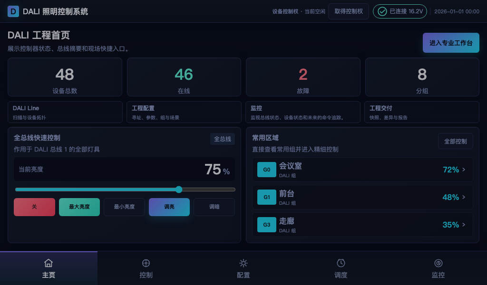

DALI CONTROL PLATFORM / V1.0
让每一条总线，为下一场景做好准备。
面向专业照明工程的控制器与上位机工作台。以国际标准为基础，把搜索、寻址、分组、场景、参数与调光收拢成一条可交付、可维护的工程路径。
Built for commissioning teams, system integrators and lighting OEMs.
LIVE WORKSPACE PREVIEW在线

DALI Line 01工程首页 · 状态总览
DALI LINE01Ready to commission
BUS SIGNAL16.2VStable link
Designed around the standards your projects already trust.
IEC 62386DALI-2DT6DT8D4i
ONE SYSTEM / MANY MOMENTS
把工程复杂度，
交给一套清晰的工作台。
从首次发现设备，到项目交付后的维护，产品能力沿着工程团队真实的工作顺序展开。每一步都有明确对象、状态和结果。
发现与识别
快速建立控制器与 DALI Line 视图，支持全新搜索、扩展搜索和连接状态确认。
Commissioning start地址与拓扑
读取、设定与重分配短地址，按地址、群组和总线对象组织现场工作。
Addressing分组与场景
把空间意图沉淀为可读取、可复用的分组与场景逻辑。
Space logic参数与批量配置
围绕亮度、渐变、范围和设备参数，提供清晰的读取、设定和批量运维入口。
Fleet ready实时调光与色彩
支持广播、组与单地址控制，覆盖开关、亮度、色温及 RGBWAF 彩色应用。
DT8 control连接、升级与交付
Type-C 与 LAN 接入，配合固件升级和工程快照，让项目从现场调试走向长期运维。
LifecycleFROM FIRST SCAN TO LASTING VALUE
一条可交付的
工程节奏。
把“能控制”推进到“能复制、能交付、能持续维护”。每个阶段都围绕现场团队最关心的下一步动作。
Discover
发现控制器与总线设备
Address
建立清晰的地址与拓扑
Compose
配置分组与场景逻辑
Tune
批量设定关键参数
Operate
现场调光与状态确认
Maintain
升级、诊断与持续交付
SOFTWARE EXPERIENCE
为现场团队设计的
一眼可懂。
专业能力不应该被复杂界面掩盖。工作台以总线、对象、状态和下一步动作组织信息，便于在工程现场快速判断。
DALI WORKSPACE / DASHBOARD在线
工程总览
01 / 04设备、在线状态、故障与常用区域在同一视图中汇总。
THE CONTROLLER LAYER
稳住现场连接，
再把能力交给软件。
DALI 电源控制器 / 网关是项目的可靠入口：向上连接工程工作台，向下管理 DALI Line。通过 Type-C 或 LAN 接入，保持部署灵活，也为后续产品形态留出空间。
Type-C 直连LAN 局域网可选外部总线电源
PRODUCT IMAGE SLOTAdd controller render预留产品实拍 / 3D 渲染图位置
DALI
Controller / Gateway / DALI Line
BUILT FOR THE SPACES THAT MATTER
从一间展厅，
到一套可复制的系统。
同一套基础能力，适配不同空间对氛围、效率、可维护性和未来扩展的要求。
博物馆 / 展陈
精细亮度与色温控制，为展品和动线保留层次。
Curated light商场 / 零售
快速复制区域策略，降低多店部署和调试成本。
Repeatable rollout办公 / 园区
让分组、场景和时序跟随空间使用变化。
Adaptive workspace家居 / 体验空间
把专业调光能力转化为直观、易用的日常体验。
Human scaleTHE NEXT LAYER
今天把基础做好，
明天让系统更懂现场。
面向未来的 AI 能力将建立在稳定的对象模型、工程快照和可追溯状态之上：从自然语言意图到场景建议，从异常信号到维护提示，逐步把经验变成可复用的系统能力。
READY FOR YOUR ECOSYSTEM
跨平台，
为每一种交付方式留出位置。
从工程师桌面到现场移动设备，保持同一套产品语言。品牌 Logo、平台截图和下载入口可按发布阶段逐步补齐。
SCREENSHOT SLOT
SCREENSHOT SLOT
SCREENSHOT SLOT
SCREENSHOT SLOT
SCREENSHOT SLOT
SCREENSHOT SLOT
BRAND ASSET SLOTAdd software logo预留软件 Logo / 品牌识别
Your brand layer可替换的品牌资产